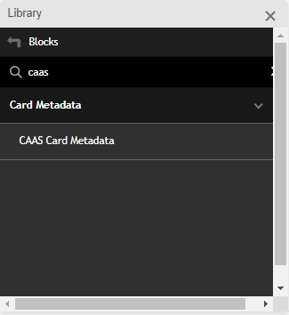

Introduction to CaaS - Authoring in Milo
The following is a brief introduction to the Milo authoring tools and publishing workflows for the CaaS platform. For a more detailed information, features and schedules, please visit the CaaS Wiki page.
*Note: Some of these options may be slighty different depending on the project setup
Create or Edit a Card in Milo
To create or edit a new card in Milo, follow these steps:
- Create a new page in Milo in the desired location
- Open the Milo Library from the AEM Sidekick on the top of the page

- From the Blocks section, select Caas Card Metadata
and copy and paste into your Milo document
 - Modify or create new metadata rows as needed
Available metadata options
Here is an example of a 1/2 Card card style that can be created with CaaS and its metadata options:

Example Caas Card Metadata block
The following are the most common metadata Caas Card Metadata block options for a basic card:
| Card-Metadata | |
|---|---|
| ContentType | caas:content-type/article (Use the tag bowser for easy access) |
| Tags | caas:content-type/article (Use the tag bowser for easy access) |
| CardImage | Enter URL or paste image |
| CardTitle | Card title goes here |
| Description | Card description goes here |
| CTAText | Text to be disaplyed in the CTA |
| CTAURL | Destination URL for the CTA.
Note: If no URL is provided, the URL to the current page will be used |
ProTip: The metadata names are not case sensitive, but the values are.
*Note: For a more detail list of metadata options, please visit the CaaS Milo Documentation wiki.
Create Card with Modal Video
Cards can have a video that opens in a modal window when the user clicks on the card's play button. The video must be hosted on YouTube or Adobe TV.
If a card has a modal video, a play button icon is displayed over the card image. The position of the play button may vary depending on the card design and content.
To create a Modal Video, add a PlayURL entry to the card metadata. Adjust the value to the desired video URL and settings:
| PlayURL | https://video.tv.adobe.com/v/17838t1?autoplay=true |
If necessary, see the previous
section Create or Edit a Card in Milo for more details.
ProTip: Depending on the card design and authoring, a card can have a video that opens in a modal window when the user clicks on the card's play button, and a different URL for regular the CTA.
*Note: Modal videos can not be opened from a regular CTAs.
Send to CaaS
*Note: Some of these options may be slighty different depending on the project setup
Once you have created, or edited a card metadata using Milo's Card Metadata block, as explained in the previous section, you can send it to the CaaS backend service (Chimera) so that it can be rendered in a CaaS Card Collection.
Follow these steps:
Once the metadata block is ready, click on the Preview button on the AEM sidekick bar.
> Depending on the page content, a new blank page will be displayed in the main--milo-adobe.com preview server, or consumer site.ProTip: A hidden HTML div will be created in the page with the card's metadata information needed by the Send to CaaS script.
- Once the preview page opens in a new tab, click on the Publish button on the AEM sidekick bar.

> A new blank page will be displayed in the milo.adobe.com publish server - In the AEM sidekick, select Tools > Send To Caas.

> If everything is OK you will get to the confirmation page where you can:
CaaS env: Select the environment where you want to send the card.
Push to Draft only: Check this box if you want to send the card to the draft environment only.
Use .html extension: Check this box if you want to use the .html extension in the URL.
See all properties - ProTip unique Ids can be seeing here withough the need to publish the card.
Cancel Registration - Go back to the previous page. -
Click Continue with these tags to send the data to CaaS.
You should see a success message like this:

You are done!
Create a Card Collection
Card collections are created in the Milo Configurator tool. This tool allows you to quickly create and visualize a collection of cards that can be used in a variety of ways, such as a carousel or a grid.
To create a ver basic new card collection, follow these steps:
Open the Milo Caas Configurator tool
*Note: The first time the Configurator tool loads with a default set of values you can modify to meet your needs, subsequent times it will load with the last settings used. You can reset back to the default values in the Advance tab.
- In the Basics tab select the values you need for your collection, for example:
Basics Tab Source Milo (If left blank it will pull content from all sources) Results Per Page 8 (Typically 8 for Grid layouts and 4 for Carousel) Total Cards to Show 300 (up to 2000) - In the UI tab select the settings that match your design, for example
UI Tab Card Style 1/2 Card Layout Type 1200px Container (Most common are Grid Container or Carousel) - In the Tags tab select a few tags to narrow down the scope the collection, for example
Tags Tab Content type Tags Article, Video (if left blank, it will get cards from all content types) Tags to Include (List of tags that must be in the cards)
To use a collection on any Milo page, click on the copy button in the top right corner of the configurator tool to copy the code snippet.
And paste the HTML link into the sharepoint document.
For a more detailed description of all of the Milo Configurator tool options, please see the Milo Configurator Documentation.
Using the Bulk Publisher
The Bulk publisher in Milo allows to send multiple pages to CaaS at the same time.
In progress... (Check back later!)
That's it!
Congrats!
You should now be *almost* an expert in creating and editing cards in Milo and sending them to CaaS.
Go make some awesome collections!
The Javelin Team.